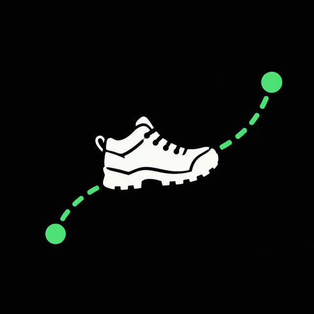

中文
English
关于我
想法
阅读
我的产品
← 返回产品列表
漫步星球 · ROAM

把日常步数变成一场可视化的星球旅程。选择起点与目的地，在星球上看见每一步带来的进展。
读取 Apple 健康中的步数与步行距离，也支持手动记录
用可旋转、可缩放的星球展示真实城市间距离
支持 Apple Watch，并可保存旅程、解锁距离奖章
与朋友并肩前行，或从路线两端相向奔赴
在 App Store 下载